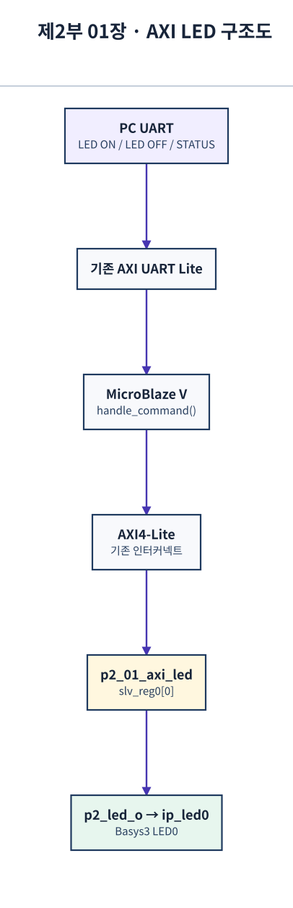

00이 장의 목표
복제된 11장 SoC에서 사용자 AXI4-Lite IP를 만들고, UART 문자열 명령으로 LED0을 제어하는 실습. 프로젝트 현재 상태부터 순서대로 따라합니다.
- Basys3
- MicroBlaze V
- Vivado / Vitis 2024.2
- AXI4-Lite
01실습 목표와 동작
PC에서 LED ON을 입력한 뒤 Enter를 누르면 Basys3 LED0가 켜집니다. LED OFF는 끄고, STATUS는 사용자 IP의 현재 제어값을 읽어 응답합니다.
| 입력 문자열 + Enter | IP 레지스터 동작 | 실물 LED0 | UART 응답(예시) |
|---|---|---|---|
LED ON | REG0 bit0에 1 쓰기 → 재읽기 | ON | OK LED=ON REG0=0x00000001 |
LED OFF | REG0 bit0에 0 쓰기 → 재읽기 | OFF | OK LED=OFF REG0=0x00000000 |
STATUS | REG0 읽기만 수행 | 변경 없음 | STATUS LED=OFF REG0=0x00000000 |
abc | 쓰기 없음 | 변경 없음 | ERROR: use LED ON / LED OFF / STATUS |
명령 규칙: 대문자와 공백을 정확하게 입력합니다. 명령은 Enter에서 실행되며 CR, LF, CRLF를 처리합니다.
02UART 문자열에서 LED0까지
UART(유아트, 비동기 직렬 통신)는 PC 입력 문자들을 전달합니다. MicroBlaze V(마이크로블레이즈 브이, FPGA 내부 소프트 프로세서)가 한 줄을 해석하고, AXI4-Lite(에이엑스아이 포 라이트, 레지스터 제어 버스)로 값을 기록합니다.
| 레지스터 | 오프셋 | 01장 활용 |
|---|---|---|
slv_reg0 | 0x00 | bit0 → LED0 출력 |
slv_reg1 | 0x04 | 사용하지 않음 |
slv_reg2 | 0x08 | 사용하지 않음 |
slv_reg3 | 0x0C | 사용하지 않음 |
IP의 Base Address는 Vivado Address Editor에 실제 표시되는 값을 사용합니다. 0x44A00000 등의 수치는 예시일 뿐 고정 주소가 아닙니다.
03LED0 소유권과 기존 기능
| 대상 | 기본 SoC 기존 | 제2부 01장 신규 프로젝트 |
|---|---|---|
| LED0 | SW0를 읽은 CPU가 기존 AXI GPIO로 출력 | 새 사용자 AXI IP의 led_o가 출력 |
| LED1~15 | 기존 AXI GPIO 출력 | 기존 AXI GPIO 배선 유지 |
| UART·Timer·INTC·BRAM | 기존 BD 구성 | BD 내부 IP 유지 |
| BTNC | 기존 Reset | Reset 유지 |
제2부의 C 프로그램은 이번 장 명령 기능에 집중하므로 11장의 LED14/LED15 소프트웨어 표시 동작을 실행하지 않습니다. IP 블록을 보존하는 것과 기존 C 애플리케이션 동작을 모두 유지하는 것은 구분합니다.
soc11_user_top은 절대 수정하지 않습니다. LED0의 동작 변경은 복제 프로젝트에만 적용합니다.LED0 배선이 이렇게 바뀝니다
기존: led_tri_o[0] → 보드 led[0] (스위치·GPIO 실습).
변경: led_tri_o[0] → 내부 gpio_led[0] (사용하지 않음), p2_led_o → ip_led0 → led[0]. 외부 LED0의 구동자는 한 곳입니다.
04프로젝트·준비물·파일
| 항목 | 설정 또는 준비 |
|---|---|
| 성공 기존 | ~/soc/hw/soc11_user_top/soc11_user_top.xpr |
| 새 프로젝트 | ~/soc/hw/soc_ip_design_01/soc_ip_design_01.xpr |
| 개발환경 | Ubuntu · Vivado/Vitis Unified IDE 2024.2 |
| 하드웨어 | Basys3 + USB 데이터 케이블, 보드 내장 LED0만 사용 |
| PC 터미널 | moserial 또는 minicom · 115200, 8N1, 흐름제어 없음 |
05실습 프로젝트 준비 상태 확인
먼저 기존 프로젝트와 실습용 복제 프로젝트의 파일 구성을 확인합니다. 복제 프로젝트가 없다면 절차 02에 따라 새로 생성합니다.
| 검사 대상 | 확인 대상 | 확인 방법 |
|---|---|---|
| 11장 프로젝트 XPR | soc11_user_top.xpr | 경로 확인 |
| 01장 새 XPR | soc_ip_design_01.xpr | 경로 확인 |
| 새 BD·Wrapper·Top | soc11_integration.bd, soc11_integration_wrapper.v, basys3_soc11_top.v | 경로 확인 |
| 기존 vs 신규 Top | diff -u 결과 차이 없음 | 차이 확인 |
| 현재 Wrapper 포트 | clk, btnC, sw_tri_i, led_tri_o, UART_0_rxd, UART_0_txd | 포트 확인 |
새 AXI IP의 *_S00_AXI.v | 검색 결과 없음 | 절차 04에서 생성 |
p2_led_o 포트가 Wrapper에 없습니다. 신규 Top 코드를 먼저 적용하지 말고, IP 생성 → BD 연결 → Wrapper 재생성까지 마친 뒤에 적용합니다.06기존 파일 확인
Ubuntu 터미널에서 다음 코드를 실행합니다. 읽기 전용 검사입니다.
BASE="$HOME/soc/hw/soc11_user_top"
ls -lh "$BASE/soc11_user_top.xpr"
find "$BASE/soc11_user_top.srcs" -name "soc11_integration.bd" -print
find "$BASE" -name "basys3_soc11_top.v" -o -name "soc11_integration_wrapper.v"soc11_integration.bd, Top, Wrapper 모두 출력됩니다. 파일이 누락되면 다음 단계로 진행하지 않고 기존 프로젝트 경로를 확인합니다.0711장 프로젝트 복제
- 기존 열기
Vivado 2024.2 → File → Project → Open →
soc11_user_top.xpr선택.확인: 프로젝트 상단과 Project Summary의 경로가 기존 프로젝트입니다. - Save As 실행
File → Project → Save As → Project Name
soc_ip_design_01, Location~/soc/hw. Create Project Subdirectory 체크, Import All Files 옵션이 나오면 활성화합니다.확인: 새 프로젝트 위치가.../hw/soc_ip_design_01/입니다. - XPR 확인
터미널에서
ls -lh "$HOME"/soc/hw/soc_ip_design_01/*.xpr를 실행합니다.확인:soc_ip_design_01.xpr가 출력됩니다.
08외부 소스 의존성 점검
NEW="$HOME/soc/hw/soc_ip_design_01"
ls -lh "$NEW/soc_ip_design_01.xpr"
find "$NEW" -name "*.bd" -print
grep -nF "$HOME/soc/hw/soc11_user_top/" "$NEW/soc_ip_design_01.xpr" || true
find "$NEW" -type f -name "basys3_soc11_top.v" -print새 XPR·BD·Top을 확인하고, XPR이 기존 절대경로를 참조하면 복제 독립성 미확인으로 판정합니다. 이 경우 IP 추가를 중단하고 Save As의 파일 복사 설정부터 확인합니다. 생성물의 내부 경로나 캐시 문자열만으로 즉시 FAIL 처리하지 않습니다.
09AXI4-Lite Peripheral 생성
- IP Wizard 시작
새 XPR을 연 상태에서 Tools → Create and Package New IP → Next → Create a new AXI4 Peripheral 선택.
확인: 새 IP 설정 화면이 표시됩니다. - 이름·위치 지정
Name
p2_01_axi_led, Version1.0, IP Location~/soc/hw/soc_ip_design_01/ip_repo.확인: 새 IP 저장소는 11장 폴더 밖에 있습니다. - AXI 인터페이스 설정
Interface
S00_AXI, TypeLite, ModeSlave, Data Width32, Number of Registers4. Target Language는 Verilog로 확인로 지정.확인: Register Map의 기본 레지스터가 4개입니다. - 편집 프로젝트 열기
Wizard의 Create/Package 단계에서 Edit IP를 선택하거나, IP Catalog에서 해당 IP를 우클릭해 Edit in IP Packager를 엽니다.
확인: IP Packager 소스에slv_reg0가 존재하는지 확인합니다.
실제 화면에서 읽어야 하는 값
| Wizard 구간 | 확인 / 입력 | 진행 중단 조건 |
|---|---|---|
| Peripheral Details | Name: p2_01_axi_led, Version 1.0, 편집용 IP 저장 경로가 신규 폴더 아래 | 11장 폴더가 출력 경로로 지정됨 |
| Add Interfaces | S00_AXI Slave / AXI4-Lite / Data width 32 / Registers 4 | AXI4 full 또는 AXI4-Stream으로 생성됨 |
| Next Steps | Edit IP 선택 → 실제 HDL 파일 두 개와 slv_reg0 확인 | 생성 파일 구조가 지침과 다름 |
IP Location은 절대경로를 직접 고정하지 말고 Wizard에서 실제 입력/출력된 위치를 확인합니다. 자동으로 추가되는 IP repository 위치와 편집 프로젝트 경로는 서로 다를 수 있습니다.
10기존 AXI 템플릿에 LED 출력 추가
자동 생성된 두 RTL 파일을 열어 다음을 추가합니다. 위치·코드 설명은 AXI RTL 해설에서 확인합니다.
| 파일 | 추가할 내용 |
|---|---|
p2_01_axi_led_v1_0.v | 출력 포트 led_o, 하위 S00_AXI 인스턴스 연결 .led_o(led_o) |
p2_01_axi_led_v1_0_S00_AXI.v | 출력 포트 led_o, assign led_o = slv_reg0[0]; |
output wire led_o, // 모듈 포트에 1회 선언
.led_o(led_o), // 최상위에서 하위 AXI 모듈 연결
assign led_o = slv_reg0[0]; // 하위 AXI 모듈 내부 출력 연결이 세 조각을 같은 위치에 연속해서 붙이는 것이 아닙니다. 각 코드의 정확한 삽입 위치를 별도 해설에서 확인합니다.
slv_reg0와 led_o가 연결되며 AXI 기존 쓰기·읽기 로직은 유지됩니다.포트를 수정하는 실제 위치
- 상위 모듈: 출력 포트 선언
p2_01_axi_led_v1_0.v의module포트 목록 첫 항목에output wire led_o,를 추가합니다. - 상위 모듈: 하위 인스턴스 연결
기존
p2_01_axi_led_v1_0_S00_AXI인스턴스의 포트 목록 첫 항목에.led_o(led_o),를 추가합니다. - 하위 모듈: 출력 포트 선언
p2_01_axi_led_v1_0_S00_AXI.v의 포트 목록 첫 항목에output wire led_o,를 추가합니다. - 하위 모듈: 레지스터 배선
slv_reg0선언 확인 후always바깥에assign led_o = slv_reg0[0];를 추가합니다.
쉼표 위치는 실제 선언부/인스턴스의 첫 항목 앞에 삽입할 때를 기준으로 설명했습니다. 다른 위치에 넣으면 쉼표를 조정해야 합니다. Vivado에서 생성된 소스와 이름이 다르면 삽입하지 않습니다.
11IP 재패키징·Catalog 확인
- 수정 소스 저장
IP 편집 프로젝트에서 두 RTL 파일을 저장하고 Syntax 오류를 확인합니다.
확인:led_o가 각 모듈에 선언되고 연결됩니다. - Re-Package
IP Packager → Review and Package → Re-Package IP 실행.
확인: component.xml이 수정된 파일과 출력 포트를 반영합니다. - 원래 프로젝트에서 갱신
soc_ip_design_01.xpr프로젝트로 돌아와 IP Repository와 IP Catalog를 갱신합니다.확인:p2_01_axi_led가 선택 가능한 IP로 나타납니다.
12Block Design에 사용자 IP 연결
- BD 열기
Sources →
soc11_integration.bd더블클릭.확인: 기본 SoC MicroBlaze V·GPIO·UART·Timer·INTC 구성이 보입니다. - IP 추가
Block Design에서 Add IP →
p2_01_axi_led검색·추가.확인: 사용자 IP 블록의S00_AXI·led_o확인. - AXI 연결
Run Connection Automation에서 신규 Slave를 기존 CPU의 AXI 주소 경로에 연결합니다. Clock/Reset 연결은 실제 기존 100MHz AXI 도메인에 맞춥니다.
확인:S00_AXI와 AXI Master가 연결됩니다. - LED 출력 외부화
신규 IP의
led_o→ 우클릭 Make External → 외부 포트명p2_led_o.확인: BD 외부 출력p2_led_o가 있습니다. - 주소 확인
Address Editor에서 새 IP Segment 주소를 배정하고 실제 Base Address를 기록 → Validate Design.
확인: 주소 충돌 및 미연결 Critical Error가 없습니다.
13AXI IP 연결 완료 후 구조 대조

| 시작 | 도착 | 무엇을 확인할까? |
|---|---|---|
| 기존 MicroBlaze V AXI 주소 경로 | 신규 p2_01_axi_led/S00_AXI | 기존 인터커넥트에 매핑, Address Editor 주소 존재 |
| 기존 AXI Clock | 신규 IP s00_axi_aclk | BD에서 같은 클록 도메인 사용 |
| 기존 AXI Reset | 신규 IP s00_axi_aresetn | 극성과 클록 연관성 확인 |
IP led_o | BD external p2_led_o | 출력 포트 1비트·단일 구동 확인 |
Wrapper p2_led_o | Top ip_led0 | 실제 생성 Wrapper 선언부에 새 포트 존재 |
변경 전후 Top 구조
변경 전
soc11_integration_wrapper
.led_tri_o(led) // LED0~15
.sw_tri_i(sw)
.UART_0_rxd(RsRx)
.UART_0_txd(RsTx)변경 후
wire [15:0] gpio_led;
wire ip_led0;
assign led = {gpio_led[15:1], ip_led0};
soc11_integration_wrapper
.led_tri_o(gpio_led)
.p2_led_o(ip_led0)14Wrapper 재생성·사용자 Top 교체
- Output Products 갱신
변경된
soc11_integration.bd를 저장하고 Generate Output Products를 실행. Wrapper는 Vivado 자동 관리형으로 갱신합니다.확인: Wrapper의 포트에p2_led_o가 추가됩니다. - 새 Top 교체
새 프로젝트의
basys3_soc11_top.v를 열고 제2부 01장 사용자 Top 전체 소스로 바꿉니다. 기존 프로젝트 파일은 열어 수정하지 않습니다.확인:.p2_led_o(ip_led0)와 기존led[15:1]배선이 보입니다. - Set as Top
Sources에서
basys3_soc11_top오른쪽 클릭 → Set as Top. Elaborated Design에서 포트 오류를 점검합니다.확인: LED0에 GPIO와 IP가 동시에 연결되지 않습니다. - XDC 확인
기존 기본 SoC Top과 동일한 외부 포트 이름이므로 기존 Top용 XDC를 재사용합니다. 중복 XDC 활성화 여부와 LED0 핀 제약을 확인합니다.
확인: 외부 Top 포트·제약 이름이 일치합니다.
아래는 BD의 p2_led_o 포트를 생성·갱신한 뒤에만 적용하는 최종 Top 코드입니다. Wrapper 갱신 이전에는 이 파일을 적용하지 않습니다.
// 제2부 01장(P2-01) 사용자 Top — 보드 연결 전용
// (변경) LED0을 신규 AXI IP 단독 출력에 연결한다.
// (유지) LED1~15, SW, UART, Clock, Reset은 기존 Wrapper에 연결한다.
module basys3_soc11_top (
input wire clk, // Basys3 100 MHz: W5
input wire btnC, // 기존 시스템 Reset: U18
input wire [15:0] sw, // 기존 스위치 입력
output wire [15:0] led, // 내장 LED[15:0]
input wire RsRx, // PC -> FPGA UART
output wire RsTx // FPGA -> PC UART
);
wire [15:0] gpio_led; // 기존 AXI GPIO 출력, bit0은 미사용
wire ip_led0; // 새 사용자 AXI IP 출력
// (변경) 결합된 신호를 보드 출력에 연결한다.
// LED[15:1]은 gpio_led[15:1], LED[0]은 ip_led0으로 연결.
// 연산이나 상태 결정이 아닌 단순 배선이다.
assign led = {gpio_led[15:1], ip_led0};
soc11_integration_wrapper u_soc11 (
.clk(clk),
.btnC(btnC),
.sw_tri_i(sw),
.led_tri_o(gpio_led),
.UART_0_rxd(RsRx),
.UART_0_txd(RsTx),
.p2_led_o(ip_led0) // BD에서 외부화한 포트; 생성 Wrapper와 대조
);
endmodule
15Synthesis·Implementation·XSA
- Synthesis
Run Synthesis 실행. 경고와 오류 메시지를 확인합니다.
확인: Synthesis가 종료되고 Top/AXI 포트 오류가 없습니다. - Implementation
Run Implementation → Open Implemented Design → Timing Summary와 DRC 확인.
확인: WNS·TNS 등 타이밍 수치를 기록합니다. - Bitstream
Generate Bitstream 실행.
확인: 새 프로젝트의 .bit 파일이 생성됩니다. - XSA
File → Export → Export Hardware → Include Bitstream을 선택합니다.
확인: 새 프로젝트 XSA가 생성됩니다.
16새 Platform 생성
- Platform 생성
Vitis Unified IDE 2024.2 → File → New Component → Platform. 새 이름
soc_ip_design_01_platform.확인: 기존 11장 Platform과 별도입니다. - 하드웨어 지정
Hardware Design에서 이번 장 새 XSA 선택, OS
standalone, CPU는 실제microblaze_riscv_0선택.확인: Address 및 Device Tree/BSP에 새 IP가 반영됩니다. - Build
Platform → Flow → Build.
확인: 신규 Platform Build가 완료됩니다.
17새 Application·main.c 입력
- Application 생성
File → New Component → Application →
soc_ip_design_01_app. 새 Platform 및 standalone Domain 선택.확인: 기존 11장 C 프로그램을 덮어쓰지 않습니다. - 소스 입력
C 전체 소스를 새 App의
src/main.c에 붙여넣고 저장합니다.확인: 프로젝트의main()은 하나입니다. - 주소 입력
Vivado Address Editor의 Base Address를
USER_IP_BASEADDR에 기록합니다. 미설정0xFFFFFFFFU면 의도적으로 컴파일 중단됩니다.확인: Actual Address와 C define이 일치합니다. - BSP 대조
새 Platform의
xparameters.h에서 UART Lite Base Address 매크로 존재를 확인합니다.확인:UART_BASEADDR정의가 유효합니다. - Build
Application → Flow → Build.
확인: 신규 .elf 생성, 컴파일 오류 0건입니다.
주소 설정 예시 — 실제 값과 구분
다음 두 자료가 서로 같은 주소를 가리키는지 검사합니다.
// main.c의 자리표시자 — 이 값 그대로는 컴파일되지 않음
#define USER_IP_BASEADDR 0xFFFFFFFFU
// 변경 후 작성 예: 아래 값은 시연용이며 실제 주소가 아님
// #define USER_IP_BASEADDR 0x44A00000U실제 값은 Vivado Address Editor에서 신규 Slave의 Base Address를 확인하고, 새 Platform의 xparameters.h에서 해당 주변장치 매크로와 대조합니다. 예시 주소를 그대로 붙여넣으면 다른 IP에 잘못 기록할 수 있으므로 금지합니다.
main.c의 #error는 주소 미설정 상태에서 실수로 ELF를 만드는 것을 막는 안전장치입니다.
문자열을 처리하는 실제 순서
| 처리 단계 | 입력·중간 상태 | 이해할 점 |
|---|---|---|
| 1. 수신 | 문자 L, E, D, , O, N 순서 | UART는 한 번에 1바이트씩 수신 |
| 2. Enter | line = "LED ON"의 끝에 \0 기록 | C 문자열은 종료문자가 필요 |
| 3. 비교 | strcmp(line, "LED ON") == 0 | 동일한 문자열일 때 0 반환 |
| 4. 기록 | Xil_Out32(BASE + 0x00, 1U) | CPU가 REG0에 값 1 기록 |
| 5. 하드웨어 | slv_reg0[0] → led_o | AXI 쓰기 후 레지스터 bit0이 핀 제어 |
| 6. 확인 | Xil_In32(BASE + 0x00) | 레지스터를 다시 읽어 UART 응답 |
18C 플로우차트 → 코드 이해
명령 한 줄을 수신해 handle_command()가 문자열을 비교하고 report_status()가 실제 IP를 재읽는 순서입니다.

| C 함수 | 역할 |
|---|---|
read_command_line() | 문자를 Enter까지 저장 · 초과 입력 보호 |
handle_command() | 세 문자열을 비교해 쓰기/읽기 결정 |
Xil_Out32() | AXI REG0에 1 또는 0 기록 |
report_status() | AXI REG0 재읽기·UART 결과 출력 |
19Basys3 연결·UART 설정
- USB 케이블
Basys3와 Ubuntu PC를 USB 데이터 케이블로 연결하고 보드 전원 확인.
확인: 장치가 인식됩니다. - 시리얼 포트 확인
ls -l /dev/ttyUSB* 2>/dev/null명령으로 포트 후보를 확인하고 기본 SoC의 사용 포트와 비교합니다.확인: 터미널의 실제 포트를 정했습니다. - 터미널 열기
moserial 또는 minicom에서 Baud 115200, 8 data bits, No parity, 1 stop bit, No flow control 설정. Local Echo 중복 여부를 확인합니다.
확인: 터미널이 포트를 정상적으로 엽니다. - 프로그램 실행
Vitis의 신규 Bitstream + 신규 ELF를 지정해 Program Device 및 Run/Resume.
확인:P2-01 AXI LED CONTROL시작 문구가 표시됩니다.
20문자열 명령으로 LED0 확인
- LED ON
터미널에서
LED ON입력 후 Enter.확인: LED0 ON ·OK LED=ON REG0=0x00000001 - STATUS
STATUS입력 후 Enter.확인: LED0 변화 없음 ·STATUS LED=ON REG0=0x00000001 - LED OFF
LED OFF입력 후 Enter.확인: LED0 OFF ·OK LED=OFF REG0=0x00000000 - 오타 시험
LEDON입력 후 Enter.확인: LED0 변화 없음 ·ERROR: use LED ON / LED OFF / STATUS - 경계 시험
빈 Enter, CRLF, 31자 초과 긴 입력을 시험합니다.
확인: 빈 줄 무시 · 긴 입력은 오류 · 다음 정상 명령 재수신
P2-01 AXI LED CONTROL
Commands: LED ON | LED OFF | STATUS (Enter)
STATUS LED=OFF REG0=0x00000000
OK LED=ON REG0=0x00000001
STATUS LED=ON REG0=0x00000001
OK LED=OFF REG0=0x00000000
ERROR: use LED ON / LED OFF / STATUS21증상별 원인 확인
| 증상 | 우선 확인 |
|---|---|
| XPR 또는 BD 누락 | Save As 위치·파일 복사·기존 절대경로 |
| IP Catalog에 없음 | IP repo 설정·component.xml·Re-Package |
| Top 연결 포트 오류 | Wrapper에 실제 p2_led_o가 존재하는지 |
| LED0 동작 없음 | slv_reg0[0] → led_o → p2_led_o → led[0] 경로 |
| UART 시작 문구 없음 | 실제 포트·115200 8N1·새 ELF·CPU Run |
빌드 중 #error | IP Base Address·UART BSP 매크로 확인 |
| 명령을 써도 응답 없음 | Enter 설정·명령 대소문자·CPU Run·AXI 주소 |
| AXI 경고·타이밍 오류 | 실제 소스와 BD Clock/Reset·XDC 중복 제약 |
문자열 반례 — LED 상태를 바꾸면 안 되는 입력
| 입력 | 기대 응답 | 상태 |
|---|---|---|
led on, LEDON, LED ON | ERROR: use ... | REG0/LED0 불변 |
| 빈 Enter, CRLF의 두 번째 종료 문자 | 별도 응답 없음 | REG0/LED0 불변 |
| 32자 이상 한 줄 입력 | ERROR: command too long (max 31) | Enter까지 버린 뒤 정상 명령 재대기 |
| 제어문자 포함 | ERROR: invalid character | REG0/LED0 불변 |
UART 터미널의 CR/LF 설정은 한 줄 종료와 직접 연결됩니다. 입력 자체가 전송되지 않으면 PC의 Port, Local Echo/Transmit Newline 설정도 확인합니다.
2201장 동작 확인 목록
각 항목을 직접 실행하고 예상 동작과 일치하는지 확인합니다. 정상 동작하지 않으면 앞의 오류 점검 절차에 따라 원인을 확인합니다.
23기존·공식 문서
기본 SoC 기존 학습자료 · 기본 SoC 기존 Top · AMD UG1118: AXI4 Peripheral · AMD UG643: Xil_In32 / Xil_Out32.
AMD UG1118 (2024.2): Edit in IP Packager · 공통 HTML 교재 규격 · .
24실습 파일
/* P2-01: UART 문자열 명령으로 사용자 AXI IP의 LED0를 제어한다. */
#include "xparameters.h" /* Vitis BSP의 하드웨어 주소 정의 */
#include "xil_types.h" /* u8(8비트), u32(32비트) 자료형 */
#include "xil_io.h" /* Xil_In32(), Xil_Out32() */
#include "xuartlite_l.h" /* XUartLite_RecvByte(), SendByte() */
#include <string.h> /* strcmp(): 두 문자열 비교 */
/* (필수 수정) Vivado Address Editor의 사용자 IP 주소를 입력한다. */
#ifndef USER_IP_BASEADDR
#define USER_IP_BASEADDR 0xFFFFFFFFU
#endif
#if USER_IP_BASEADDR == 0xFFFFFFFFU
#error "USER_IP_BASEADDR를 실제 Vivado AXI IP Base Address로 수정하세요"
#endif
#define LED_REG_OFFSET 0x00U /* slv_reg0: bit0가 LED0 출력 */
#define LINE_CAPACITY 32U /* 최대 31문자 + 종료문자 */
/* 제1부에서 사용한 AXI UART Lite를 재사용한다. */
#if defined(XPAR_XUARTLITE_0_BASEADDR)
#define UART_BASEADDR XPAR_XUARTLITE_0_BASEADDR
#elif defined(XPAR_UARTLITE_0_BASEADDR)
#define UART_BASEADDR XPAR_UARTLITE_0_BASEADDR
#elif defined(XPAR_AXI_UARTLITE_0_BASEADDR)
#define UART_BASEADDR XPAR_AXI_UARTLITE_0_BASEADDR
#else
#error "xparameters.h에서 UART Lite BASEADDR 매크로를 확인하세요"
#endif
/* 문자열의 각 문자를 UART로 보낸다. */
static void uart_puts(const char *text)
{
while (*text != '\0') { /* '\0': 문자열의 끝 */
XUartLite_SendByte(UART_BASEADDR, (u8)*text);
text++;
}
}
/* u32 값을 8자리 16진수 문자열로 출력한다. */
static void uart_hex32(u32 value)
{
const char digits[] = "0123456789ABCDEF";
int shift;
for (shift = 28; shift >= 0; shift -= 4) {
u8 nibble = (u8)((value >> shift) & 0x0FU);
XUartLite_SendByte(UART_BASEADDR, (u8)digits[nibble]);
}
}
/* REG0 읽기값에서 LED0 상태를 해석해 출력한다. */
static void report_status(const char *prefix)
{
u32 value = Xil_In32(USER_IP_BASEADDR + LED_REG_OFFSET);
uart_puts(prefix);
uart_puts((value & 1U) ? "LED=ON REG0=0x" : "LED=OFF REG0=0x");
uart_hex32(value);
uart_puts("\r\n");
}
/* Enter까지 입력받는다. 반환: 1=명령, 0=빈 줄, -1=초과, -2=제어문자. */
static int read_command_line(char *line, u32 capacity)
{
u32 used = 0U;
int overflow = 0;
int invalid = 0; /* NUL 등 제어문자 포함 명령 거부 */
while (1) {
u8 ch = XUartLite_RecvByte(UART_BASEADDR); /* 1바이트 대기 수신 */
if (ch == (u8)'\r' || ch == (u8)'\n') {
line[used] = '\0'; /* 항상 문자열을 종료한다. */
if (overflow) return -1; /* 버퍼 밖에 쓰지 않는다. */
if (invalid) return -2; /* 제어문자가 포함되면 거부 */
return used ? 1 : 0;
}
if (ch < (u8)0x20U || ch > (u8)0x7EU) {
invalid = 1; /* 출력 가능한 ASCII만 허용 */
continue;
}
if (used < capacity - 1U) {
line[used++] = (char)ch;
} else {
overflow = 1; /* Enter 전까지 초과 문자를 버린다. */
}
}
}
/* 문자열을 비교한 후 AXI 레지스터에 기록하거나 읽는다. */
static void handle_command(const char *line)
{
if (strcmp(line, "LED ON") == 0) {
Xil_Out32(USER_IP_BASEADDR + LED_REG_OFFSET, 1U);
report_status("OK ");
} else if (strcmp(line, "LED OFF") == 0) {
Xil_Out32(USER_IP_BASEADDR + LED_REG_OFFSET, 0U);
report_status("OK ");
} else if (strcmp(line, "STATUS") == 0) {
report_status("STATUS ");
} else {
uart_puts("ERROR: use LED ON / LED OFF / STATUS\r\n");
}
}
int main(void)
{
char line[LINE_CAPACITY]; /* ASCII 명령을 저장할 문자 배열 */
int result;
uart_puts("\r\nP2-01 AXI LED CONTROL\r\n");
uart_puts("Commands: LED ON | LED OFF | STATUS (Enter)\r\n");
report_status("STATUS ");
while (1) {
result = read_command_line(line, LINE_CAPACITY);
if (result > 0) {
handle_command(line);
} else if (result == -2) {
uart_puts("ERROR: invalid character\r\n");
} else if (result < 0) {
uart_puts("ERROR: command too long (max 31)\r\n");
}
/* 빈 줄 및 CRLF의 두 번째 줄바꿈은 무시한다. */
}
}